Publication
Mueller, S., Mohr, T., Guenther, K., Frohnhofen, J., Baudisch, P.
faBrickation: Fast 3D Printing of Functional Objects by Integrating Construction Kit Building Blocks.
In Proceedings of
CHI ’14
, pp. 3827-3834.
Best Paper Nominee
Demo at CHI'14, Video Showcase CHI'14
DOI
Paper
Video
Slides
CHI Talk
Press
Video
UIST Talk
Slides


faBrickation:
Fast 3D Printing of Functional Objects by Integrating Construction Kit Building Blocks.
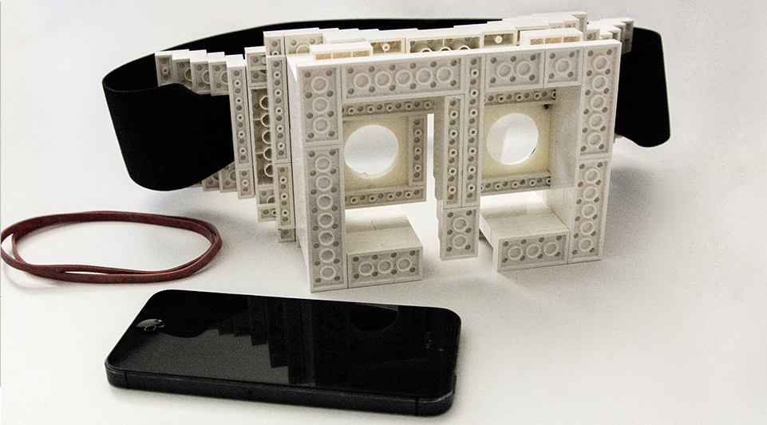
Figure 1: Let’s fabricate this head-mounted display body quickly: (a) The exact shape of the lens mounts matters; the user thus marks them as “high-resolution” in faBrickator and (b) prints them. (c) faBrickator shows the user how to create everything else from Lego bricks and how to insert the 3D printed part. (d) Done in 67 minutes instead of the 14:30h for 3D printing.
faBrickation is a new approach to rapid prototyping of functional objects, such as the body of a head-mounted display. The key idea is to save 3D printing time by automatically substituting sub-volumes with standard building blocks — in our case Lego bricks. When making the body for a head-mounted display, for example, getting the optical path right is paramount. Users thus mark the lens mounts as “high-resolution” to indicate that these should later be 3D printed. faBrickator then 3D prints these parts. It also generates instructions that show users how to create everything else from Lego bricks. If users iterate on the design later, faBrickator offers even greater benefit as it allows re-printing only the elements that changed. We validated our system at the example of three 3D models of functional objects. On average, our system fabricates objects 2.44 times faster than traditional 3D printing while requiring only 14 minutes of manual assembly.
Workflow
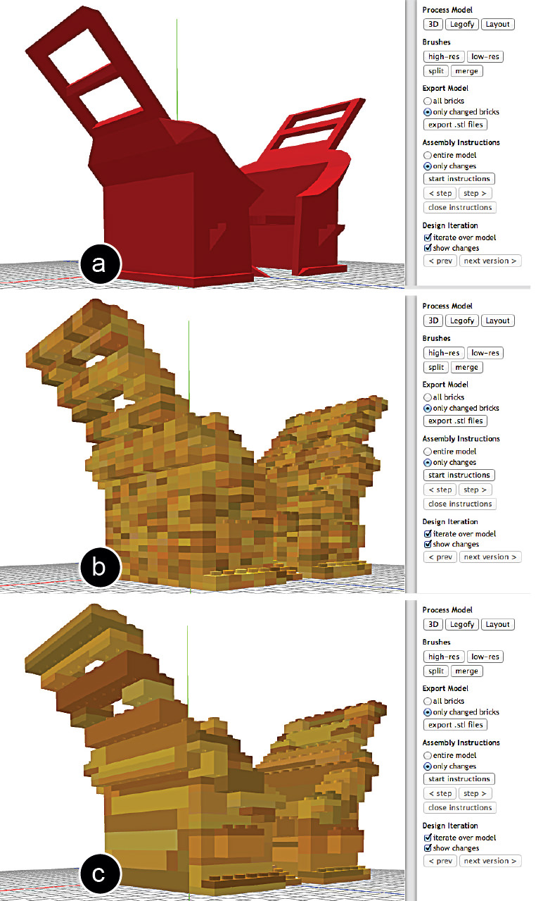
Figure 2: (a) The model is loaded into faBrickator, (b) legofied into 1×1 Lego plates, and (c) layouted according to a set of lego brick sizes.
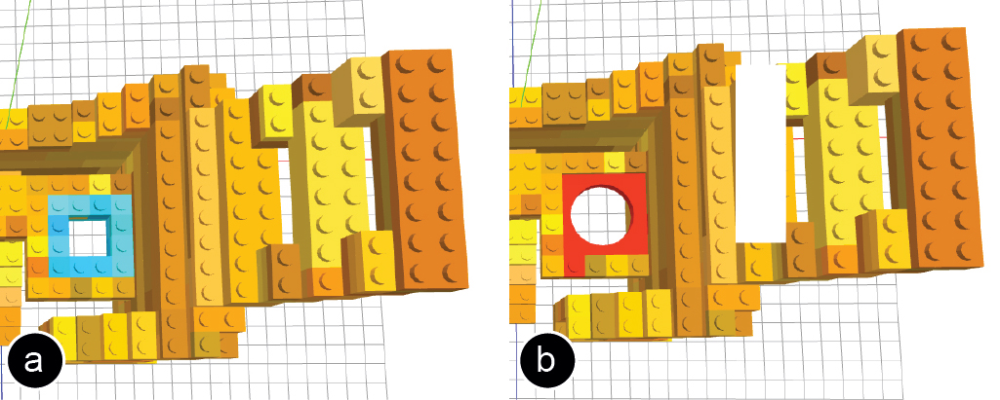
Figure 3: Using the high-res brush the user defines the region that will be 3D printed in full detail. The bricks can then be exported for 3D printing.
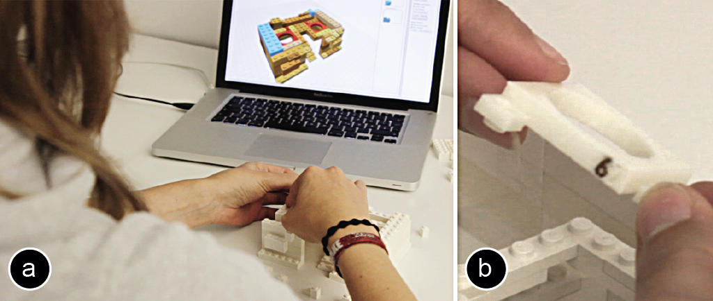
Figure 4: (a) Assembly instructions highlight the next brick in blue. (b) Each 3D printed part has a unique ID.
 Figure 5: The final faBrickated model took only 67 minutes compared to 14.30 hours when completely 3D printed.
Local Changes
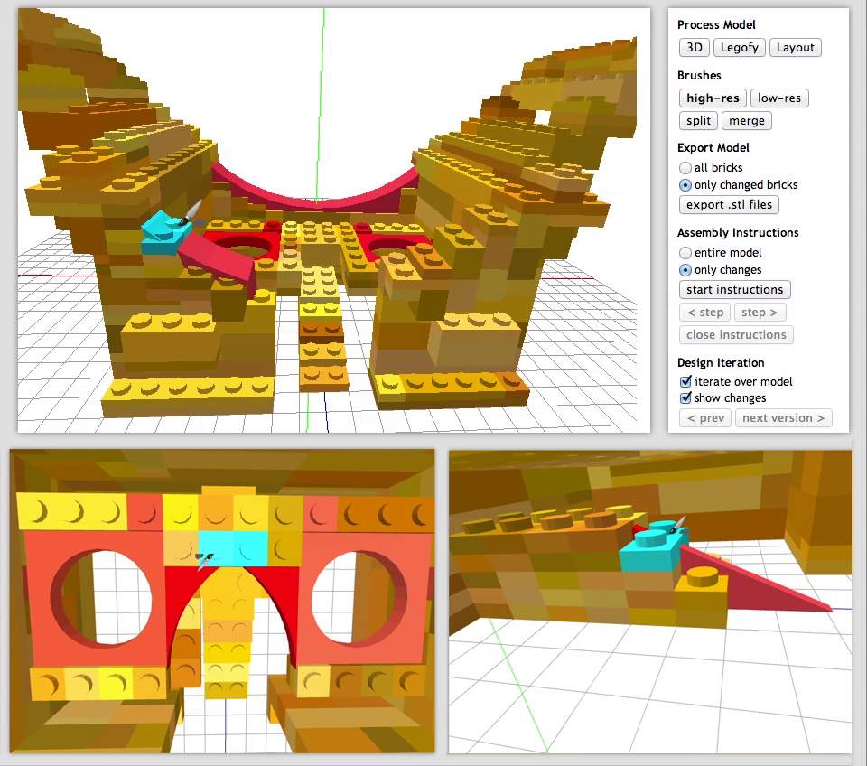
Figure 6: Making the forehead and nosepiece high-res for more comfort.
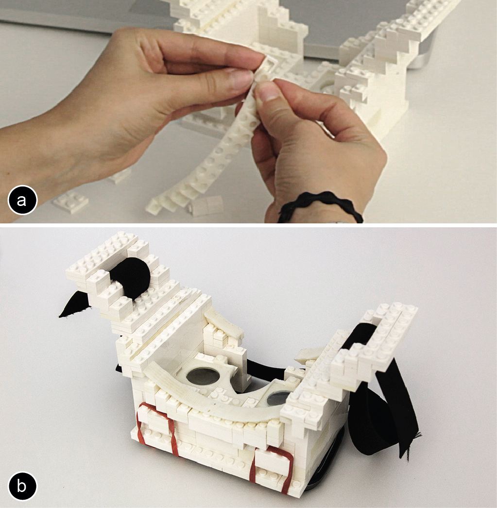
Figure 7: (a) Replacing bricks with the 3D printed parts for the head. (b) The assembled model.
Validation and Additional Examples
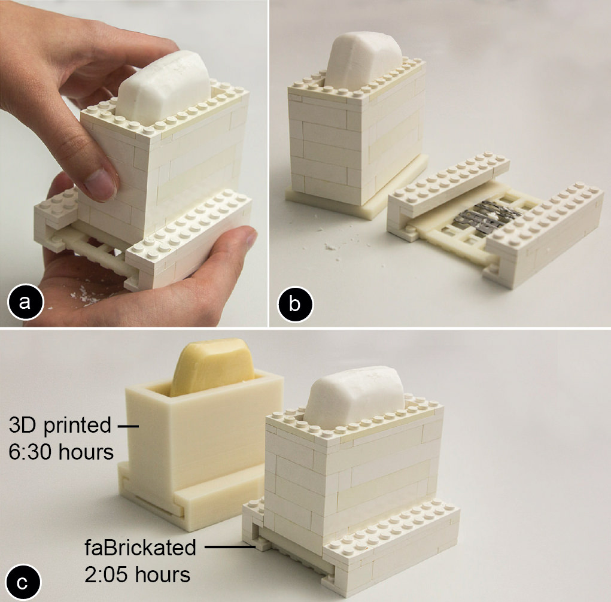
Figure 8: (a,b) This soap dispenser only takes (c) 2:05h and 5 minutes assembly compared to the 6:30h of traditional printing.
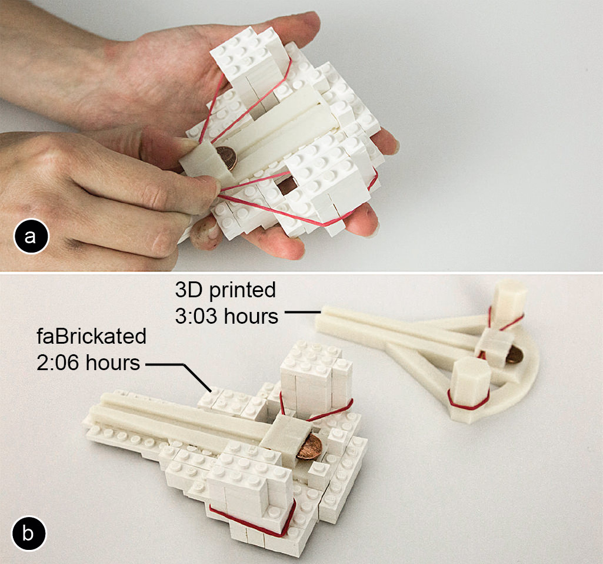
Figure 9: (a) A faBrickated penny ballista takes (b) only 2:06h for printing and 11 minutes for assembly compared to 3:03h when 3D printing entirely.
Figure 5: The final faBrickated model took only 67 minutes compared to 14.30 hours when completely 3D printed.
Local Changes
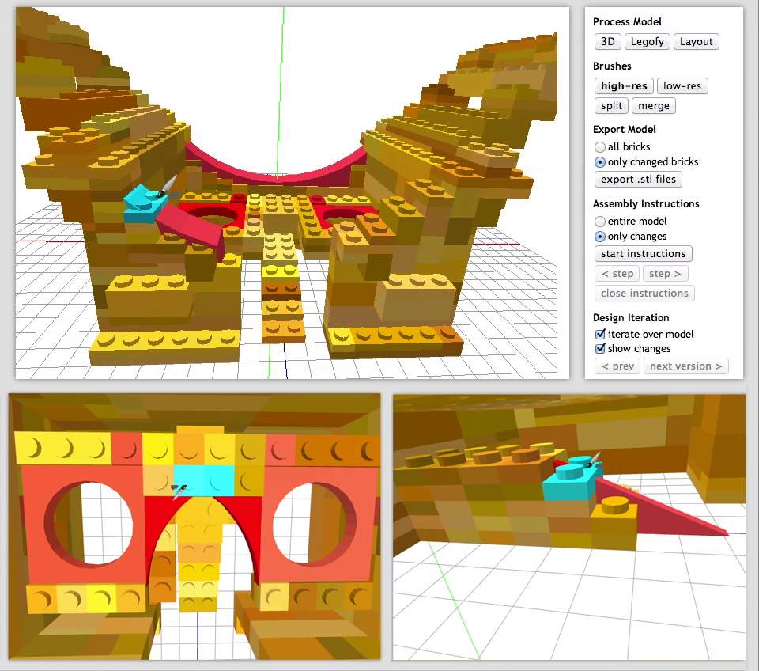
Figure 6: Making the forehead and nosepiece high-res for more comfort.
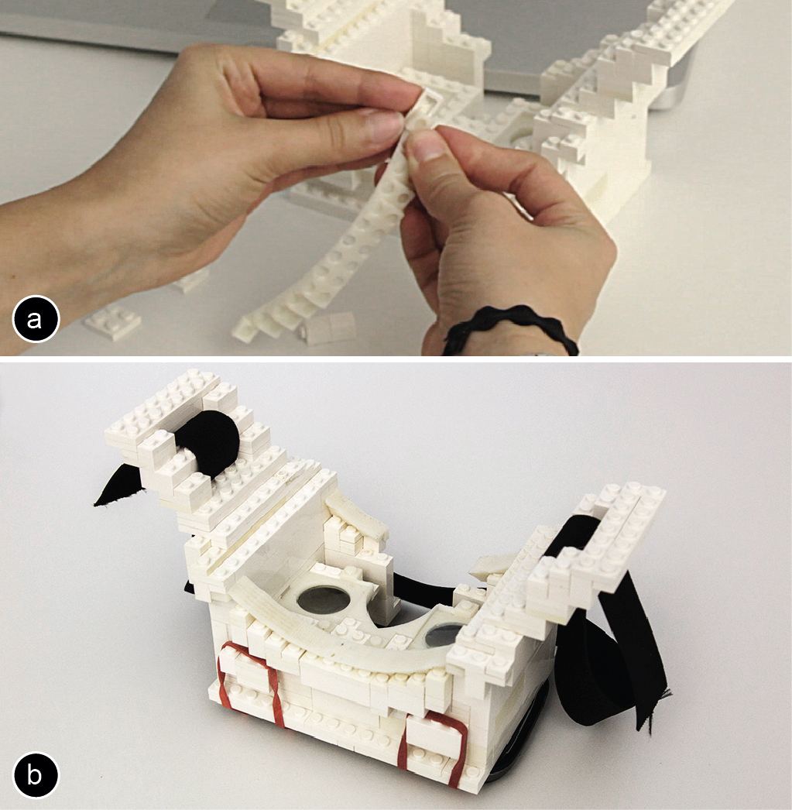
Figure 7: (a) Replacing bricks with the 3D printed parts for the head. (b) The assembled model.
Validation and Additional Examples
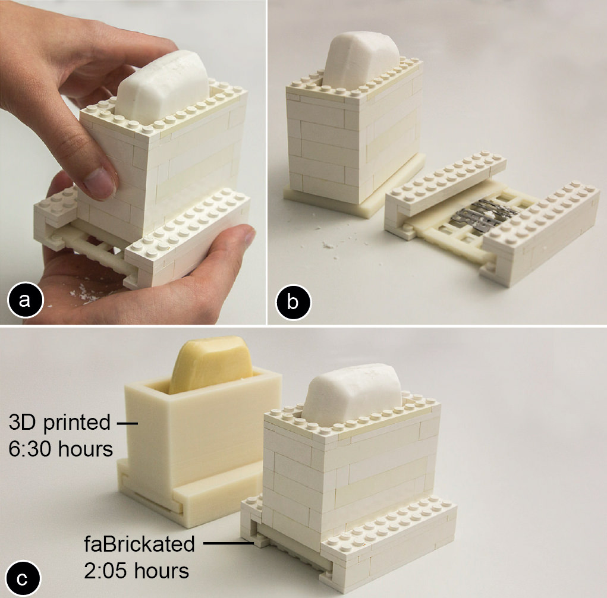
Figure 8: (a,b) This soap dispenser only takes (c) 2:05h and 5 minutes assembly compared to the 6:30h of traditional printing.
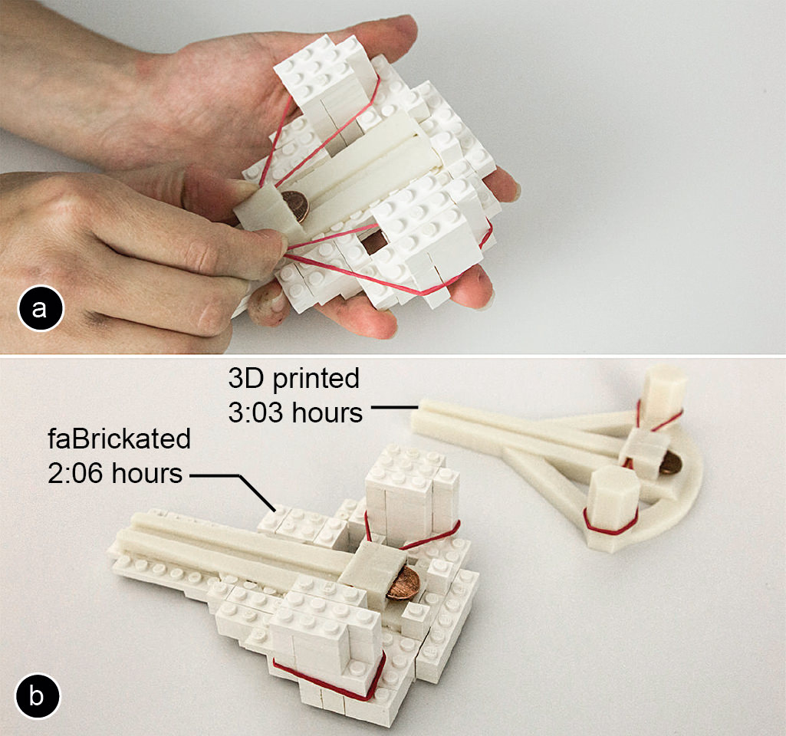
Figure 9: (a) A faBrickated penny ballista takes (b) only 2:06h for printing and 11 minutes for assembly compared to 3:03h when 3D printing entirely.
 Figure 10: How much faBrickator speeds up the prototyping process depends on how much volume can be substituted with bricks.
Figure 10: How much faBrickator speeds up the prototyping process depends on how much volume can be substituted with bricks.